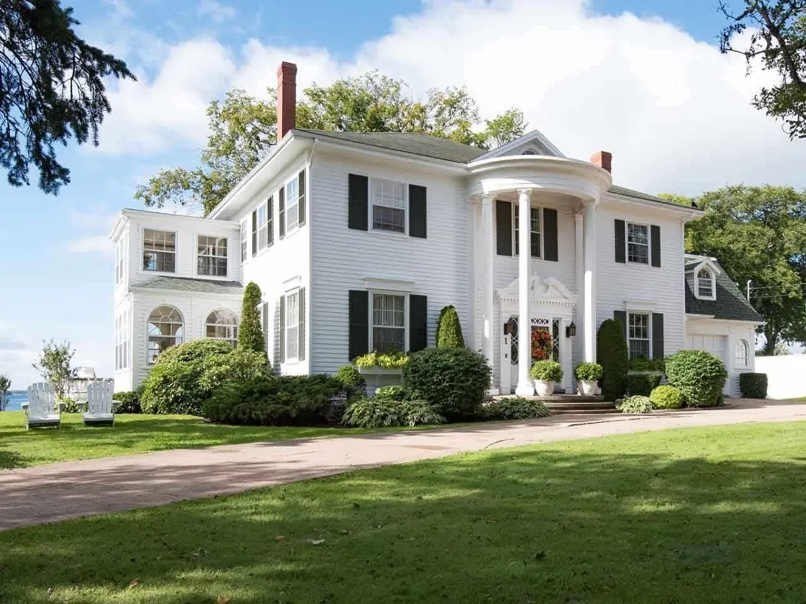
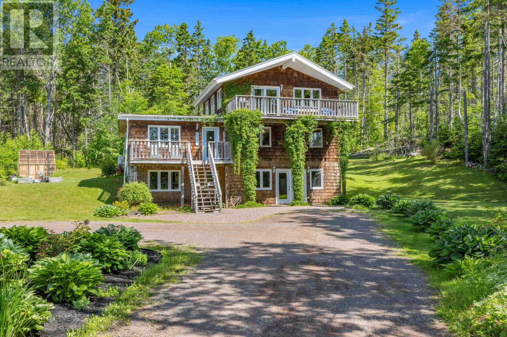

The Most Expensive Homes for Sale in Prince Edward Island.

Waterfront Properties | Prince Edward Island Real Estate.

For sale: 5518/5520 Route 19, Rice Point, Prince Edward Island.
Welcome to Prince Edward Island (PEI), a gem nestled in the eastern part of Canada. Known for its stunning landscapes, rolling hills, picturesque beaches, and charming small towns, PEI offers a unique blend of natural beauty and peaceful living.
PEI's real estate market reflects the island's tranquility and rural charm. Whether you're looking for a cozy cottage by the sea, a waterfront property with breathtaking views, or a serene countryside retreat, PEI has something to offer for everyone.
As a province with a strong focus on agriculture, fishing, and tourism, PEI presents a diverse range of properties that cater to various lifestyles. Whether you're considering a primary residence, a vacation home, or an investment property, PEI's real estate market offers a variety of options to explore.
PEI's real estate market can provide:
Affordable properties compared to larger urban centers
Scenic waterfront and countryside properties
Opportunities for vacation homes and rental properties
Investment potential in a peaceful and charming environment
Keep in mind that the real estate situation on PEI can vary, and it's important to work with local real estate experts who can guide you through the available listings and provide insights into the market trends.
Ready to explore the real estate opportunities in Prince Edward Island? Contact us today to learn more about the properties available and embark on a journey to find your dream home on this beautiful island.
The Most Expensive Homes for Sale in Prince Edward Island.
Waterfront Properties | Prince Edward Island Real Estate.
For sale: 5518/5520 Route 19, Rice Point, Prince Edward Island.